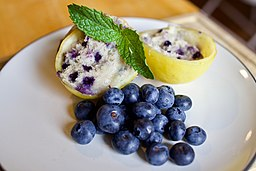

This recipe came to The Times in a 1987 article by Marian Burros, "The Battle of the Blueberry Muffins." Two years prior, Ms. Burros wrote about a recipe for the muffins attributed to the Ritz-Carlton in Boston. The hotel had adapted a recipe used by Gilchrist's, once one of city's best-known department stores. After it ran, a reader wrote in to say that the best blueberry muffins in Boston were not from the Ritz-Carlton, but from the now-closed Jordan Marsh department store. She sent along the recipe, with a description of how she picks wild blueberries: standing in a pond in the August heat and plucking berries from bushes along the bank. This version has a lot more sugar and butter and fewer eggs than the Ritz-Carlton muffins. The recipe also calls for mashing a half cup of berries and adding them to the batter. This produces a very moist muffin, one that will stay fresh longer.
YIELD: 12 muffins
TIME: 40 minutes
image attribution: A Healthier Michigan from Detroit, United States, CC BY-SA 2.0, via Wikimedia Commons
Recipe Source: Jordan Marsh's Blueberry Muffin RecipeWatch how to make blueberry muffins!
.jpg){kind=link}